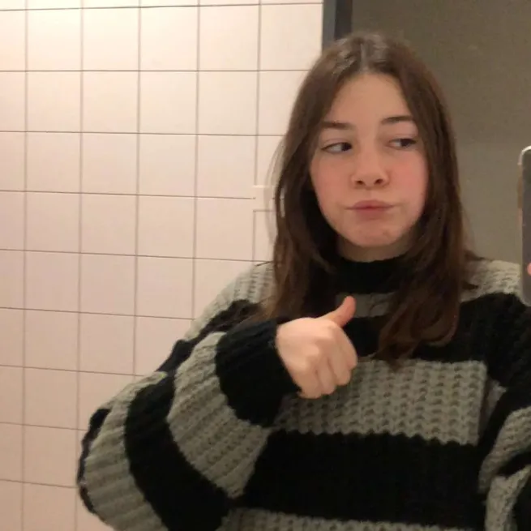
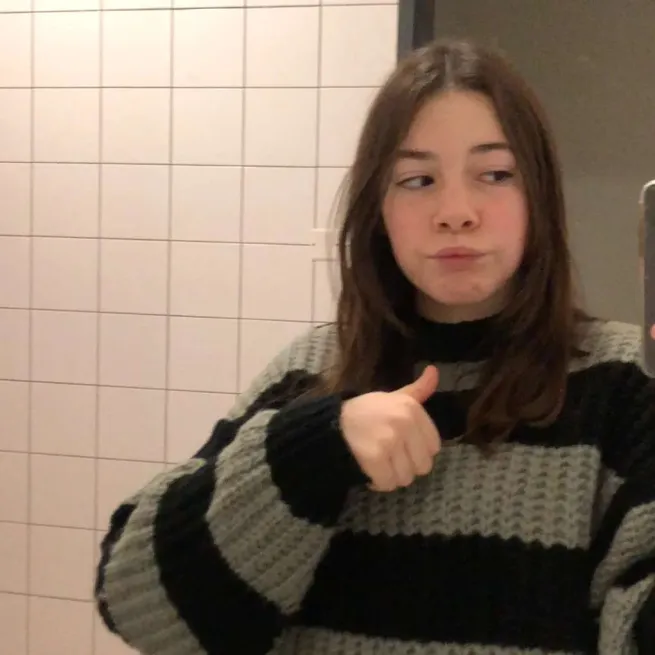

Manoon:
Coucou !
Ça fait un peu moins d'un mois et demi qu'on est ensemble, mais je t'aime vraiment trèèèèès fort.
T'es vraiment beaucoup trop importante pour moi.
Le premier janvier, après ton loooong message tout mignon, je t'ai dit "je t'aime" pour la première fois, et ça m'a profondément rempli de joie.
Voir ta tête sur mon fond d'écran tous les jours m'a toujours ravi et j'espère sincèrement que ces photos continueront d'être actualisées quotidiennement.
Nos dernières querelles m'ont vraiment fait peur,
Je t'aime énormément et penser à l'idée que tu puisses me laisser comme ça m'a vraiment effrayé,
j'ai besoin de toi manon, genre AAAAARGH, tu comprends ?? ğŸ˜ğŸ˜, viens me faire des bisous, tout ce que tu veux mais euh voilà .
J'espère que tu vas trouver quelque chose pour te faire excuser de ces frayeurs 👀
Je t'aime vraiment très fort manon,
J'ai hâte de te voir, et de vivre de nouveaux jours à tes côtés afin de remplir un peu plus ce petit mot.
(j'espère que t'as pas envoyé de photos bizarres à Coco 😔)
Je t'aime fooooooort ❤️❤️❤️❤️
WORK IN PROGRESS
 
